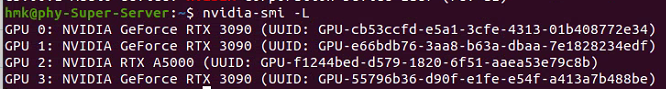
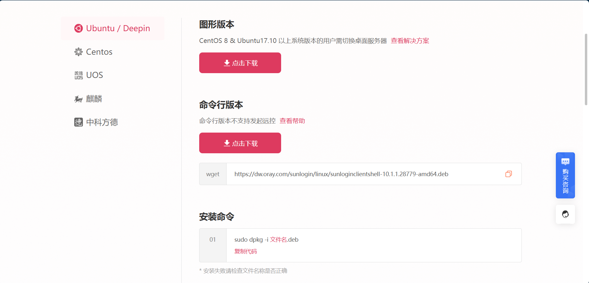
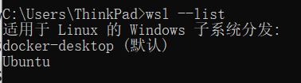
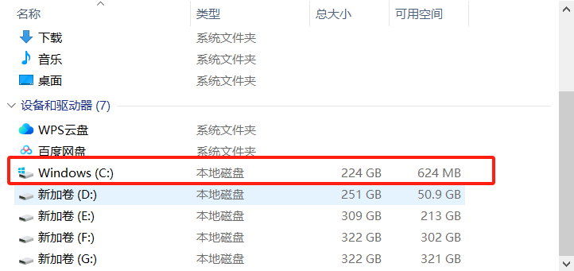
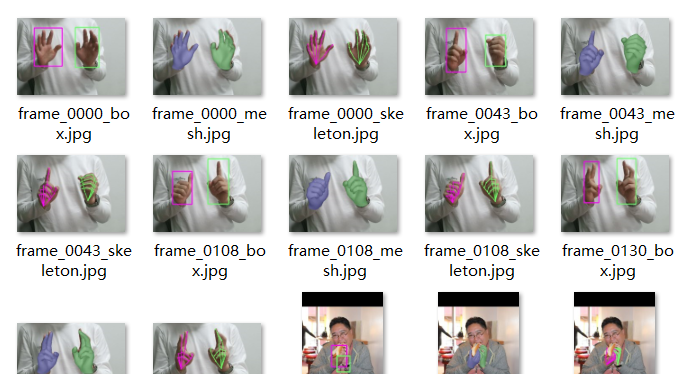

Ubuntu使用过程的一些问题以及解决
事出原因
起因是我在复现一篇论文（InterWild），复现出来的效果很不理想，然后我在Issues中看到有人有类似的情况发生，不过它的问题是出来pytorch3d安装的版本不对，但是我的pytorch3d版本和作者是相同的，所以我打算使用Linux复现一下这篇论文
使用过程
我使用的是黄勇老师部署的一个服务器,如下

之前我问一个同学如何使用这台服务器，同学给我了一个账号密码，现在我用的时候发现没有那个账号，然后我就询问管理员，管理员给了我管理员的账号密码让我重新创建了一个账号，然后我成功创建了一个账号，但是由于这台电脑连接不上校园网，连接的是广播站的WiFi，好像是没有公网ip又或者是怎么回事，管理员说的是用不了ssh，要用就下载一个向日葵远程控制远程使用，总不能天天跑去使用服务器的屋子里面使用，然后就是痛苦的开始
我原本以为Ubuntu上安装软件和Windows上安装软件一样简单，虽然我之前也在Ubuntu上安装过Pycharm等一些软件，但是没想到这个向日葵居然这么不好安装
第一个问题
我使用sudo命令是报错“hmk not in sudoers file，…”，我授权我的账号管理员权限了但是还是报错我没有sudo权限，不过这个问题比较好解决，我在网上搜到了几种解决方案，最终决定修改管理员下的sudoers文件内容,使用su指令，刚好复习第一个Linux指令
su [-lm] [-c 命令] usernane]
选项与参数: 单纯使用-如[su -]代表使用login-shell的变量文件读取方式来登录系统, 若使用者名称没有加上去,则代表切换为root的身份。
-l:与-类似,但后面需要加欲切换的使用者账号,也是login-shell的方式
-m:-m与-p是一样的,表示【使用当前的环境设置,而不读取新使用者的配置文件】
-c:仅进行一次命令,所改-c后面可以加上命今。
切换到管理员账号以及环境之后，输入visudo即可编辑sudoers中的内容，然后找到root ALL=(ALL) ALL。在它的后面添加一行"hmk ALL=(ALL) ALL"。即可实现授权sudo命令的使用权限
sunlogin的安装
网上给出的方法有很多，我首先尝试的是向日葵官网提供的Ubuntu安装方法，如下

但是我安装了之后有很大的问题，图形版本安装了之后，显示有应用点击却打不开，然后我卸载了之后安装了命令行版本，这次甚至安装完之后我根本都找不到，无奈又继续卸载，最终找到了解决方案，需要先安装对应的依赖
1 | sudo add-apt-repository universe |
安装完依赖之后,安装官网提供的图形版本，然后进行解压安装就能够正确运行了
1 | sudo dpkg -i SunloginClient_15.2.0.63064_amd64.deb |
由于服务器一直都是启动状态，所以我也没有设置开机自启动，自此就能进行远程控制使用了
转折
服务器上安装的cuda是12.8，对应的pytorch版本是最新的2.7，我安装旧的cuda和pytorch很有可能产生不兼容的问题，而且有种吕布骑狗的滋味，然后我突然想到了Windows下的Linux子系统“WSL2”，我之前在其中安装了一个Ubuntu，默认安装的24.04版本。接下来查看一下安装的Linux系统，首先打开命令行，输入
1 | wsl --list |
输入之后就可以查看到当前电脑已安装的Linux

然后在VScode中安装WSL的插件（感觉可有可无，命令行操作的还可以，而且知道对应安装的Ubuntu位置之后我们也可以进行图形化操作的），然后就是使用Ubuntu了，正当我安装在Ubuntu中使用anaconda安装pytorch1.13.1+python3.7时，这个进程一直不动（不动的原因就是因为内存没了无法继续），当时我就在随便看看电脑文件，然后我就发现爆红的C盘

与此同时，我打开的Pycharm也爆了
然后我就照着B站视频开始清理C盘，之前我的电脑已经被我整的到现在都无法正常关机，现在也不怕瞎整了，除非它不能正常启动，这里我使用了一个工具叫做SpaceSniffer.exe，搜索C盘可以查看所有文件的使用情况，其中AppData占用了100G，其中就包含了WSL的16G，还有就是一些杂七杂八的软件的缓存，JetBrains最为可恶，我都卸载它了，居然还占用我大致6GB的内存，还有Android Studio的很大一部分缓存，由于项目可能还需要进行Android的开发，所以我这里就没有对其进行删除，删除了一些杂七杂八的东西以及临时文件之后，释放的大致30GB的内存。接下来就是处理WSL。C盘无法进行扩展，因为盘符想要进行扩展必须紧邻的位置有内存才可以，但是C盘紧邻的D盘安装了我的很多软件，所以无法轻易进行拓展。
要想处理WSL需要对Ubuntu进行迁移这步比较好操作首先导出虚拟机的备份(这里我导出到了F盘)
1 | wsl --export Ubuntu F:\export.tar |
然后注销原wsl下的Ubuntu系统(相当于从C盘中的AppData中删除对应的wsl内容)
1 | wsl --unregister Ubuntu |
然后将备份导入到新的目标文件夹中
1 | wsl --import Ubuntu-22.04 F:\export F:\export.tar |
当我准备好一切准备使用wsl时，又双叒叕有意外发生，我安装的时候一直把我的进程kill掉，无论是使用pip还是conda安装都会被kill，然后我寻求了Deepseek的帮助，说我Ubuntu分配的内存太小，我拓展内存到8GB，交换分区拓展到了6GB，但还是被Kill掉，但是我重启了几次电脑之后莫名奇妙的又成功安装上了。
Docker使用
这个wsl用起来还是有问题的，我默认安装的Ubuntu是24.04太新了不能安装一些早的CUDA，此时Deepseek给我推荐了使用Docker，在这里我说明一下Docker，以下是百度百科介绍：
Docker是一组平台即服务（PaaS）的产品。它基于操作系统层级的虚拟化技术，将软件与其依赖项打包为容器。托管容器的软件称为Docker引擎。Docker能够帮助开发者在轻量级容器中自动部署应用程序，并使得不同容器中的应用程序彼此隔离，高效工作。
简单的说就是Docker是一种容器化技术，可以将应用程序及其依赖环境打包成轻量级、可移植的容器，实现快速部署和跨平台运行。这里我举一个例子：比如我现在要复现一个论文，作者的原环境是Ubuntu20.04+cuda11.3+pytorch1.11.0+pytorch3d0.7.3，我可以使用docker pull nvidia/cuda:11.3.1-devel-ubuntu20.04拉取一个Ubuntu20.04+cuda11.3的镜像，然后docker run -it --gpus all nvidia/cuda:11.3.1-devel-ubuntu20.04 /bin/bash运行一下就可以在Windows下拥有一个Ubuntu环境而且可以使用对应的cuda版本，总体来说还是非常好用的
安装好Ubuntu和cuda之后就是python的安装了，这里我复现论文选择的是python3.8的版本，运行下面的代码升级一下对应的apt，升级完之后运行就可以拥有一个python3.8
1 | apt update && apt upgrade -y |
安装pip(错误的安装方法，不要直接执行)
1 | python get-pip.py |
报错如下
ERROR: This script does not work on Python 3.8. The minimum supported Python version is 3.9. Please use https://bootstrap.pypa.io/pip/3.8/get-pip.py instead.
运行
1 | python --version |
显示如下：
Python 3.8.10
运行
1 | pip list |
显示如下：
bash: pip: command not found
正确的安装pip方法应该如下：
1 | wget https://bootstrap.pypa.io/pip/3.8/get-pip.py |
Pytorch3d安装
然后是pytorch3d的安装（使用pip只能在pypi寻找到0.1.0，0.2.0，0.3.0等，最高就是0.3.0的版本，但是我需要使用的是0.7.3），首先升级apt以及安装一些依赖：
1 | apt update && apt install -y git ninja-build cmake gcc g++ libglib2.0-0 libsm6 libxrender1 libxext6 |
这里不能直接使用pip install .安装，还是会报错，编译一直报错，首先需要安装加速编译的包：
1 | apt-get update && apt-get install -y ninja-build ccache |
然后是进行预编译扩展（我也不懂是啥，我第一次安装的时候是运行完这个再安装就成功了，但是我这次运行这段代码报错了，我试了两次，都是只要这个运行通过了后面就能安装了）
1 | python3.8 setup.py build_ext --inplace --verbose 2>&1 | tee build.log |
但是我这次运行这个安装时却报错了，我看了一下说是缺少Python 开发头文件（Python.h），然后运行安装，还安装了一堆编译的依赖
1 | apt-get update && apt-get install -y python3.8-dev #开发头文件 |
安装完之后继续运行
python3.8 setup.py build_ext --inplace --verbose 2>&1 | tee build.log
这里我可以正常运行了，然后离成功也不远了，果然，使用pip install .成功安装上了pytorch3d
但是复现论文的时候还是出现的问题，出现了pytorch和pytorch3d不兼容的情况
undefined symbol: _ZNK3c1010TensorImpl36is_contiguous_nondefault_policy_implENS_12MemoryFormatE
然后我又把pytorch3d给卸载了
1 | pip uninstall pytorch3d -y |
重新走一遍全部的流程
1 | # 从源码重新编译安装 |
这一次才是真正的成功，可以正常运行代码，至此论文就复现成功了
